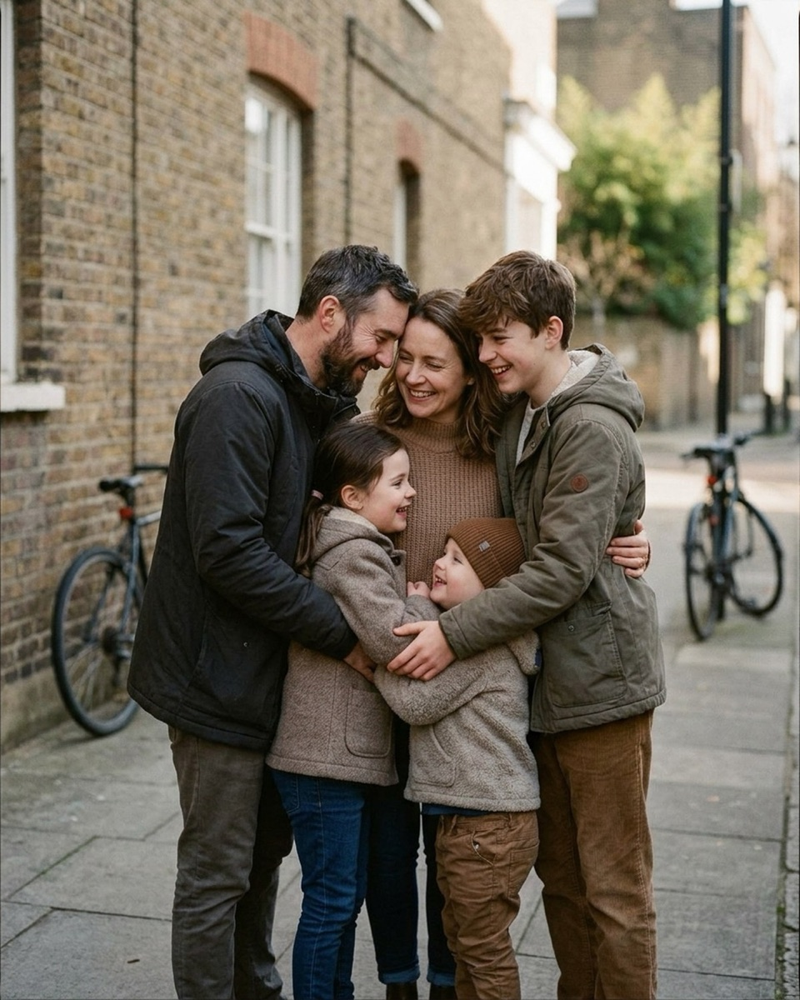
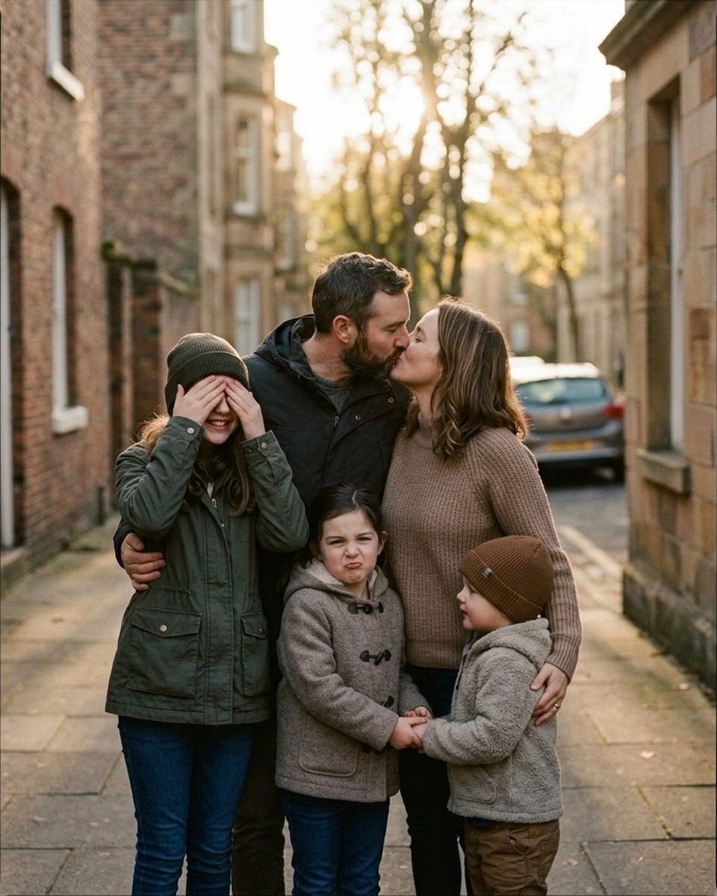
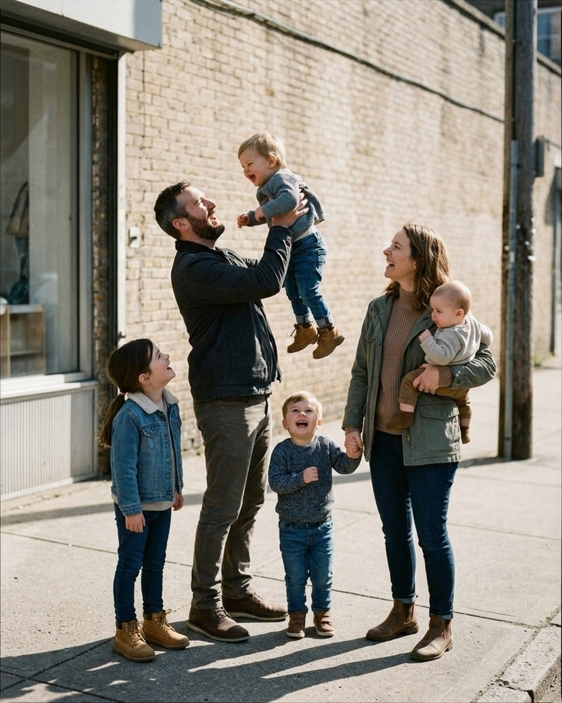
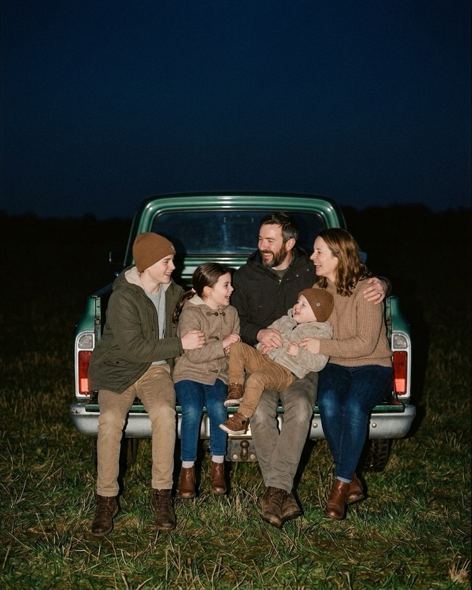
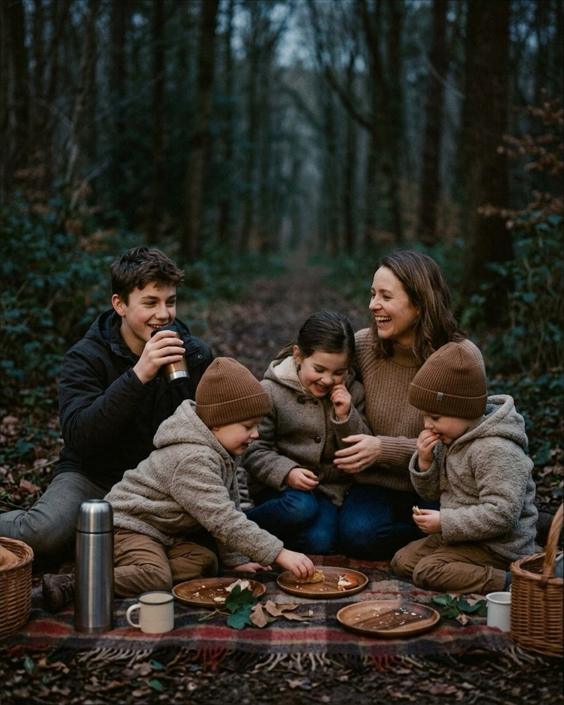
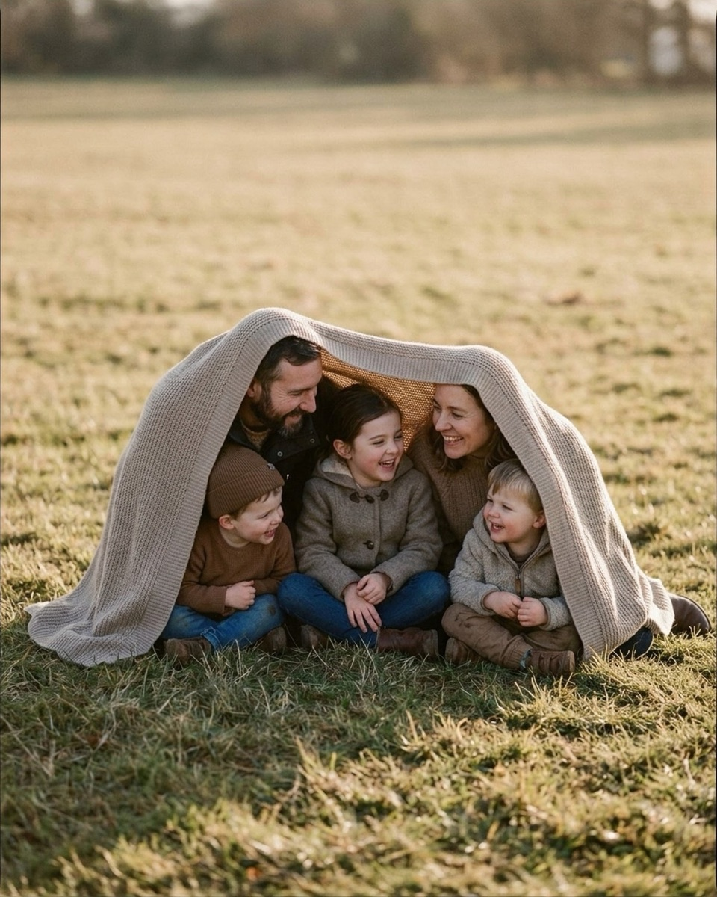
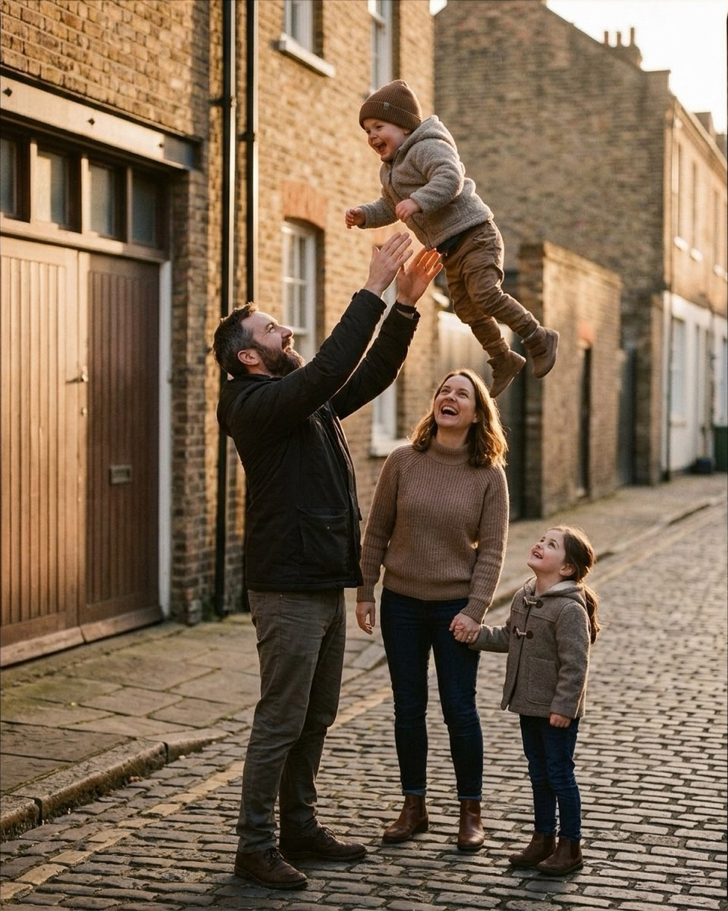
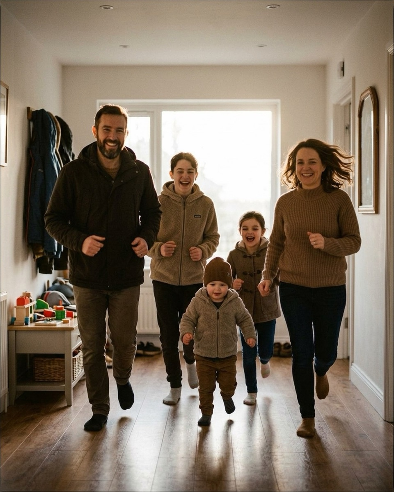
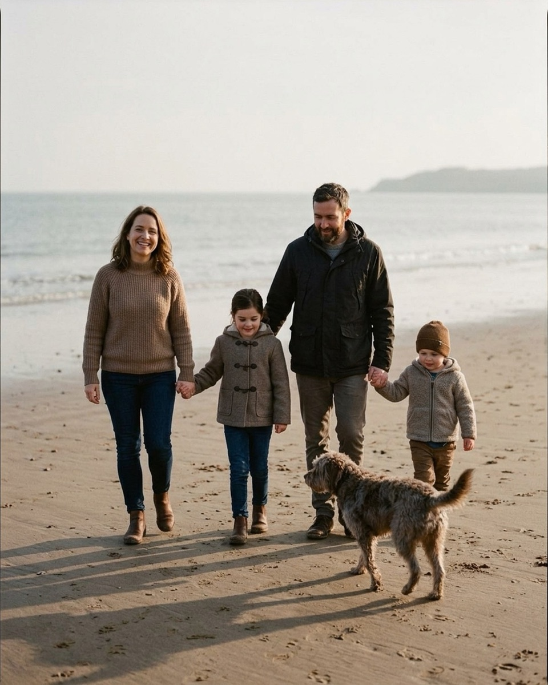

Posing a family of five without it falling apart
Five people never split evenly. Here's the one-anchor trick and the exact words that hold the shape together.
Five is the number where family portraits start to break. Four fits into two neat pairs. Six splits into a back row and a front row without anyone noticing the math. Five always leaves one person floating — the third kid with no hip to stand on, the middle child who doesn't know which parent to lean toward. The references below are AI-generated posing scaffolds, not photographs of real families; the catalog doesn't have real five-person frames yet, and they're the first thing being added through the contributor program. The fix for the floating-fifth problem isn't a cleverer diagram, it's a single anchor — one person (usually the toddler, sometimes the dog) that the other four physically organize around — and then the words you say to hold that shape for the two seconds you need. The arrangement gets everyone standing in the right place. The sentence gets them looking like they want to be there.
Standing arrangements
Standing poses for five people work when one adult becomes the hinge the rest lean into, rather than five bodies spaced evenly across the frame. These three use a center anchor, a lift, and a kiss as the excuse for everyone else to react.
Group squeeze

Put the mother dead center, facing the lens — she's the anchor everyone else closes toward. The father comes in from her left, angled inward until he's nearly in profile. The teenage son takes her right side, one arm around her waist, head tipped in close so his height doesn't read as distance. The two younger kids tuck in front at the center, angled toward each other, arms wrapped around one another rather than around a parent. Last, the father reaches his outside arm around the whole cluster to close the circle. Everyone's eyes go inward, toward each other, not the camera — that's what keeps a five-person squeeze from looking like a lineup.
This is also the setup where getting a genuine reaction out of five faces at once is hardest — worth pairing with 20 things to say to get natural smiles at a family session if the group is stiffening up.
Mom, Dad — look at each other. The kids will do the rest, I promise.
Nervous clientFrom the pose "Group squeeze"
Say this the moment you feel the parents bracing for the camera instead of each other. It gives them one simple, low-stakes job and takes the pressure off performing for the lens.
Sway together, slow, like the world's gentlest huddle.
CalmFrom the pose "Group squeeze"
Use this once everyone's in position and the pose is starting to look frozen. A little motion loosens shoulders and gives you a burst of frames to choose from instead of one stiff hold.
Parents kiss, kids react

The parents go in the center background, turned into each other in profile for a kiss — father's arm extends to the older daughter on his right, mother's hand rests on the younger son beside her. The eldest daughter plants herself front left, facing the camera, both hands clapped over her eyes in a giggling, playfully-embarrassed cover. The middle child stands directly between the parents, facing camera with an exaggerated grossed-out face, holding hands with the youngest, who stands to her right. The whole pose only works because the kiss is real, not performed — which means the parents need thirty stiffness-free seconds first.
If the couple has gone rigid in front of their own kids, work through what to say when a couple goes stiff for their two-shot before you bring the children back in — the kids' reactions read as fake if the kiss they're reacting to is fake.
Parents, rest your heads together while the kids settle in.
CalmFrom the pose "Parents kiss kids react"
Use this as a bridge while you're still arranging the kids around them — it keeps the parents connected instead of standing there waiting.
Loudest family cheer on three. Neighbors optional.
PlayfulFrom the pose "Parents kiss kids react"
Fire this right after the kiss to snap the kids' reactions from posed-embarrassed to genuinely loud and delighted — it also resets everyone's energy for the next setup.
Lift the littlest

Father goes in profile on the left, mother three-quarters toward him on the right — expect an infant, a toddler, and two older kids in the mix here. Father lifts the toddler to head height, both of them looking at each other and smiling. The oldest girl stands far left, facing right, looking up at the lift. Mother holds the infant on her outer hip with one arm, head turned to laugh toward the father and the airborne toddler. The middle boy stands between the parents, facing camera, holding his mother's hand. Nobody but the toddler needs to look at the lift for long — the rest of the reactions can be quick and candid.
You don't need to fix his collar. I promise it reads as charming.
Nervous clientFrom the pose "Lift the littlest"
Use this the moment a parent starts fussing over a kid's outfit instead of the moment in front of them — it's a fast way to get their attention back on their family.
Everybody close your eyes except the baby. They can supervise.
CalmFrom the pose "Lift the littlest"
Good for resetting a group that's gotten camera-conscious — the odd instruction breaks concentration and the eyes-open moment after tends to be the real one.
Want the fall mini session shot list?
About 25 poses grouped by family size, each with the words to say. Free PDF.
One email to confirm, one with the PDF. Unsubscribe any time.
Seated and ground arrangements
Sitting solves the five-person spacing problem by stacking people front-to-back instead of side-to-side. A tailgate, a blanket, or a canopy of fabric gives every body a place to lean, and it's the easiest register to hold for more than a few seconds — which matters when you're also managing a toddler.
Tailgate sit

Seat the whole family in a row on a lowered tailgate: teen son, young daughter, father, toddler, mother, left to right. Father sits center, arm around the mother's far shoulder. Mother holds the toddler across both laps, legs stretching toward the father. The teen angles inward from the far left, legs dangling; the young daughter sits between teen and father, also legs down, hands relaxed. Direct the whole line to turn toward each other rather than the camera — a five-person row looking dead-on reads like a school photo, but the same row caught mid-conversation reads like a real evening.
Just walk. Kids wander. That's the picture.
Nervous clientFrom the pose "Tailgate sit"
Say this before anyone sits down, while a parent is still trying to herd kids into a perfect line. It gives permission for the imperfect version, which is usually the better frame.
Squeeze in close and take one big family breath together.
CalmFrom the pose "Tailgate sit"
Use once everyone's seated and you want the row to compress into something warmer than five people sitting near each other.
Picnic blanket, forest

Spread a blanket on the forest floor. The teenage boy sits far left, knees bent, sipping from a travel tumbler. Mother and a young daughter kneel center-right, angled toward each other, laughing. Two toddlers in matching outfits work the foreground — one reaching for a snack plate, one eating with both hands. Scatter picnic props (thermos, mugs, a wicker basket) across the front to give hands something to do besides pose. The goal is that everyone's attention lands somewhere real — the food, each other, the tumbler — rather than on holding still for you.
The kids don't have to sit still. Chase them. I'll keep up.
Nervous clientFrom the pose "Picnic blanket forest"
Use this early, before parents start correcting wandering toddlers back onto the blanket — the correction is usually less photogenic than the wandering.
Pile on the parents like a snow drift.
PlayfulFrom the pose "Picnic blanket forest"
Good once the food props are placed and energy is dipping — it gets the kids moving toward the parents instead of toward the snacks.
Blanket fort peek, field

Sit the three kids in a tight row directly on the grass, oldest cross-legged in the center, two younger ones flanking with hands relaxed in their laps. Parents sit close behind — father left, mother right — leaning in over the kids to compress the group front-to-back. Drape a large knit blanket over the parents' heads and shoulders so it forms a canopy tent, cascading down on both sides to the grass. Everyone turns inward, talking and laughing under the fabric. This is the pose to reach for when a session has been running long and formal poses have stopped landing — the blanket gives kids a game to play instead of an order to follow.
You handle the hugging. I'll handle the timing.
Nervous clientFrom the pose "Blanket fort peek field"
Use this to hand control back to the parents when they're worried about directing their own kids correctly — they just need to hug, you'll catch the moment.
Sit close and watch the sky change. That's the whole plan.
CalmFrom the pose "Blanket fort peek field"
Works as a settling line once the canopy is draped and everyone's a little giddy from getting under it — it slows the energy down to something you can actually shoot.
Movement and candid
Once the formal frame exists, five people can afford to move — and movement is what makes a five-person group look unposed, because nobody can hold a perfect spot while walking or being tossed in the air. These three trade precision for energy.
Toddler toss

Line the family loosely across a cobblestone street — father left, mother center, young daughter right. Father turns full profile, plants his feet, and raises both hands overhead to safely toss and catch the toddler. Mother faces slightly forward, her free arm hanging naturally, her other hand holding the daughter's. Both mother and daughter tilt their heads up toward the airborne toddler — their genuine reaction to the toss, not a held expression, is the actual shot. Shoot in a fast burst; the useful frame is somewhere in the half-second after the toddler leaves the father's hands.
There's no wrong way to hold your kid. They'll show you where they fit.
Nervous clientFrom the pose "Toddler toss"
Use this before the toss starts, if a parent is overthinking hand placement — it moves the focus from technique to the kid.
Everyone point at the person most likely to steal dessert.
PlayfulFrom the pose "Toddler toss"
A good palate-cleanser after several tosses in a row, when you want a laugh-driven frame instead of another action shot.
Race to camera, home

Stage this in a backlit hallway at home, staggering everyone in depth: parents on the outer edges, older kids in the midground, toddler centered and slightly forward. Father and mother jog toward the camera, elbows bent, smiling straight at the lens. The teenage son trails behind the father, the young daughter behind the mother, both laughing as they jog. The toddler runs or walks straight down the center, arms out for balance. The backlighting does most of the work — a hallway window behind the group turns motion blur into a warm halo instead of a mess.
Read them one page. I just want the listening faces.
CalmFrom the pose "Race to camera home"
Use this before the run, as a settling activity to get real (rather than camera-ready) expressions loaded up before everyone breaks into motion.
Tallest to smallest, then everyone lean out and peek at me.
PlayfulFrom the pose "Race to camera home"
A good line for lining everyone up before the first take, especially with a five-person height spread from toddler to teen.
Path wander, beach

Line the family side by side on the beach — mother, daughter, father, young son — holding hands continuously across the row. Walk them slowly and naturally toward the camera along the wet sand, with a dog free to trot near the father and son. Mother looks straight into the lens with an open smile; everyone else looks down at their footing or toward each other. The held hands are what keep five walking bodies reading as one family instead of four separate people who happen to be near each other, so don't let anyone drop the chain to check their phone or their hair.
For coaching the walk itself into something looser, 20 things to say to get natural smiles at a family session has more lines built for exactly this kind of unposed movement.
The dog is in charge now. Everyone watch the dog.
Nervous clientFrom the pose "Path wander beach"
Use this if the walk starts looking choreographed — putting the dog in charge gives the humans something believable to react to.
Race to that tree and back. Parents, you're allowed to lose.
PlayfulFrom the pose "Path wander beach"
Good for a closing burst of energy at the end of this setup, or as a transition into whatever comes next in the session.
Ordering the session so the formal frame survives
Shoot the standing group squeeze and the parents' kiss first, while clothes are still clean, hair is still done, and patience hasn't been spent. Those two poses need the most cooperation and the least chaos tolerance, so they go while everyone still has both. Move to the seated and blanket poses next — they ask less of stiff joints and short attention spans, and they give you the option to let a toddler nap against a parent's shoulder without losing the shot. Save the movement poses for last on purpose: by then the kids have burned off the stillness they had at the start, and a toss or a run channels that energy into the frame instead of fighting it. If you shoot the race-to-camera pose first, you won't get the group squeeze back — five people don't re-compose easily once they've scattered. A fall session compresses this order further since light and patience both run out faster; the fall family photo poses guide will cover the shortened version of this same sequence. The arrangement gets five bodies into a shape that reads as one family. The order you shoot them in is what keeps that shape holding together long enough to get the frame.
The Fall Mini Session Shot List
About 25 poses grouped by family size, each with the words to say. A free PDF, sent once you confirm your address.
One email to confirm, one with the PDF. Unsubscribe any time. No selling, no sharing.
Every prompt in this guide is in the app, with the pose it belongs to.
Prompted is the posing app that is only a posing app: 250+ poses, each with word-for-word prompts in four tones, filtered to the light you're standing in. The sun tracker is free forever.
Get Prompted on the App Store